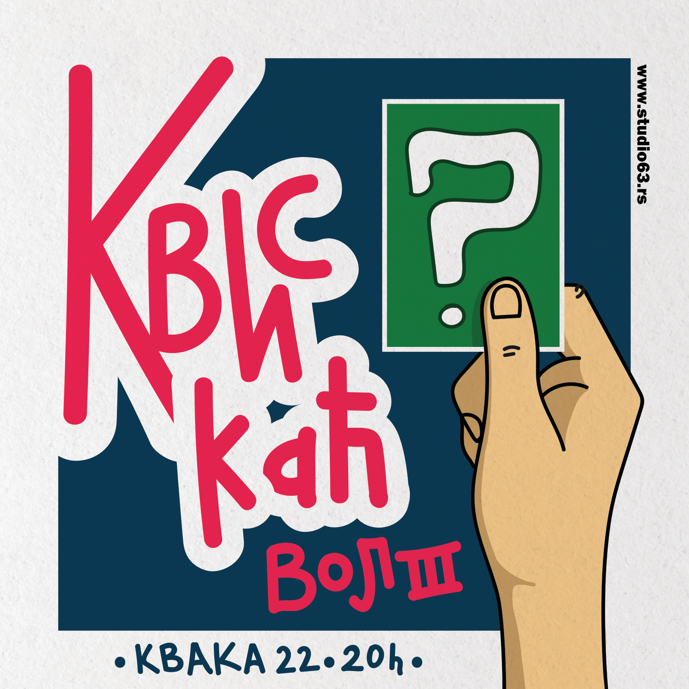

Poslednja emisija ovogodišnjeg radija “Studio 63” je dobro poznati kviz, pod nazivom Kviskać vol3. Ove godine će se realizovati iz @kvaka22_catch22 . Kviz će biti uvertira u žurku zatvaranja celodnevnog radijskog spektakla koja činje u 21h 🤯
Uslov na ulazu u Kvaku 22 biće donacije u obliku novogodišnjih paketića, čime ćete učestvovati u ulepšavanju praznika nezbrinute dece u @svratistebgd 🎄❤️🎁 Takodje smo želeli da učestvujemo u osmesima dece koja boluju od malignih oboljenja. Nacionalno udruženje roditelja dece obolele od raka (NURDOR), koje čine roditelji, lekari, medicinsko osoblje i svi ljudi dobre volje, su pokrenuli projekat “Kutija za hrabrost”, iz koje deca, nakon terapije koju prime, izvlače po jednu igračku kao malu simboličnu nagradu za hrabrost. Katedra za snimanje i dizajn zvuka je ove godine rešila da učestvuje u toj herojskoj priči, napuni kutije hrabrosti i stavi osmehe na dečija lica.
Uslov na ulazu u Kvaku 22 biće donacije u obliku novogodišnjih paketića, čime ćete učestvovati u ulepšavanju praznika nezbrinute dece u @svratistebgd 🎄❤️🎁 Takodje smo želeli da učestvujemo u osmesima dece koja boluju od malignih oboljenja. Nacionalno udruženje roditelja dece obolele od raka (NURDOR), koje čine roditelji, lekari, medicinsko osoblje i svi ljudi dobre volje, su pokrenuli projekat “Kutija za hrabrost”, iz koje deca, nakon terapije koju prime, izvlače po jednu igračku kao malu simboličnu nagradu za hrabrost. Katedra za snimanje i dizajn zvuka je ove godine rešila da učestvuje u toj herojskoj priči, napuni kutije hrabrosti i stavi osmehe na dečija lica.
